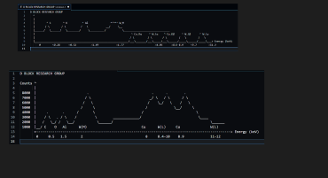
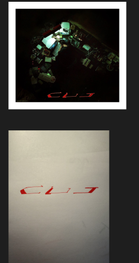
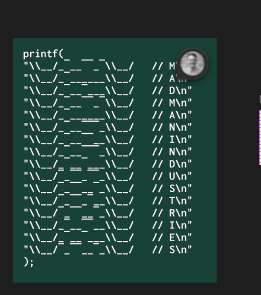
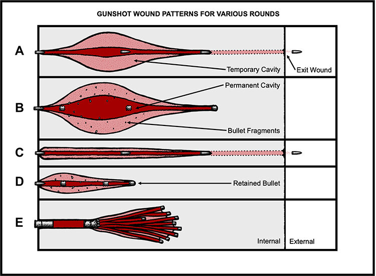
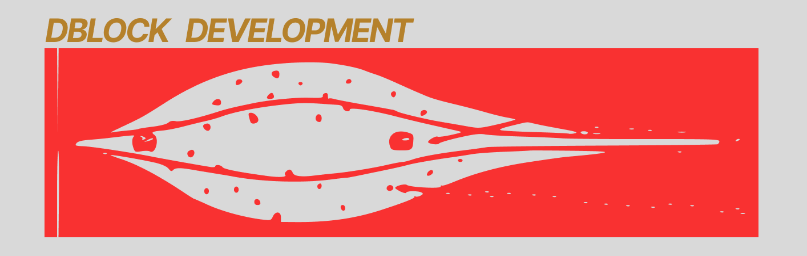

Graphic Design
A small collection of graphics, layouts, and visual experiments. This page gathers logo work, image treatments, chart styling, and concept pieces from the source images in this project.
Featured Mark
Vector logo work for DBlock Development.
Design Gallery
The work below ranges from clean technical layouts to more stylized visual compositions.
Chart Design
Dark-theme chart treatment with labeled data traces and a compact technical layout.

Cut Design
A two-panel composition pairing a photographed object arrangement with a reduced graphic treatment.

Madman Design
Type and symbol-driven poster-style graphic with a stripped-down, code-influenced look.

Pattern Studies
Visual studies exploring wound pattern diagrams and simplified pattern translation.

